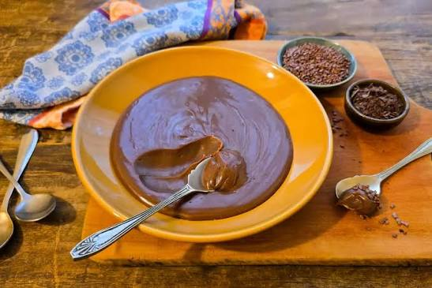

Brigadeiro de Micro-ondas
Brigadeiro sem panela e sem mexer no fogão. Um bowl, o micro-ondas e 8 minutos.
Tempo de preparo
8 minutos
Louça suja
1 bowl
Porções
15 unidades
Dificuldade
Fácil
Imagem da receita

Vídeo do preparo
Ingredientes
- 1 lata de leite condensado (395 g)
- 4 colheres de sopa de chocolate em pó
- 1 colher de sopa de manteiga
- Granulado de chocolate para enrolar
Modo de preparo
- Coloque o leite condensado, o chocolate em pó e a manteiga em um bowl fundo.
- Misture bem com uma colher até ficar homogêneo.
- Leve ao micro-ondas em potência alta por 2 minutos.
- Retire, mexa e volte ao micro-ondas por mais 2 minutos.
- Repita mais uma vez por 2 minutos, sempre mexendo entre as etapas.
- Deixe esfriar por 2 minutos e leve à geladeira por 30 minutos.
- Unte as mãos com manteiga, faça bolinhas e passe no granulado.
Dica: mexa entre cada etapa do micro-ondas. É isso que evita que o doce empelote e garante o ponto certo de enrolar.